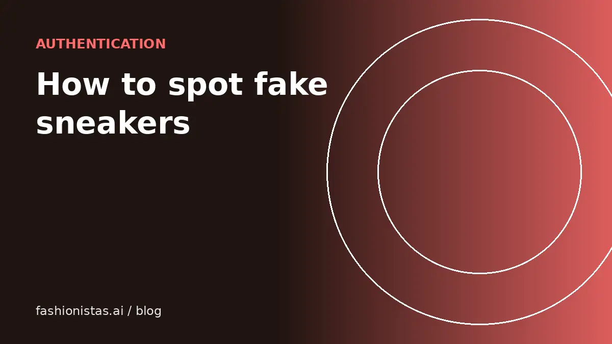

How to spot fake sneakers when you buy secondhand

Sneakers are among the most counterfeited items in resale, and the best fakes fool people who have owned the real pair. The good news: fakes still tend to fail on several small details at once. This guide covers the checks that work for most pairs, the specifics for popular Nike, Jordan, Yeezy and New Balance models, and how to buy so a fake gets caught before it reaches you.
Buy in a way that catches fakes for you
Your first defense is the buying route, not your eye.
- eBay Authenticity Guarantee: qualifying sneakers above eBay's price threshold in eligible categories are inspected by an independent authenticator before shipping to the buyer.
- GOAT, StockX and Flight Club run their own verification on pairs sold through them.
- Poshmark authenticates eligible items sold for $500 or more.
- Always pay inside the app. Payment apps sent as "friends and family", bank transfers and gift cards remove your protection.
If you are buying locally or on an app without authentication, the checks below matter much more.
Checks that work on most sneakers
- Box label. Compare the label against an authentic example of the same model: font, spacing, style code, colorway name and size. The style code on the box should match the code on the size tag inside the shoe.
- Size tag. Inside the tongue or on the inner side. Check the style code, production dates and the print quality. Blurry text, wrong fonts or a code that doesn't match the box are red flags.
- Shape and stance. Fakes often get the silhouette slightly wrong: toe box too high, heel shape off, a "hourglass" heel missing on models known for it. Compare side profile photos carefully.
- Stitching. Even, consistent stitches with no glue stains. Messy stitching around the swoosh, heel tab or toe box is common on fakes.
- Materials. Leather that feels plasticky, suede that is flat and lifeless, or overly shiny surfaces.
- Smell. A strong chemical glue smell is a frequent sign of counterfeit production, though not proof on its own.
- Insole and footbed. Logos printed crooked or rubbing off easily, and missing stitching under the insole on models that should have it.
- Price. If it is well under recent sold prices for the size, ask why.
Air Jordan 1 and Nike Dunk
- Wings logo (Jordan 1): should be cleanly debossed, with the TM mark legible and properly placed. Compare the depth and position with authentic photos for that release.
- Swoosh shape and placement: the swoosh tip usually points toward a specific spot near the laces; on fakes it can be too long, too low or a slightly wrong curve.
- Heel shape: many authentic Jordan 1 Highs have a curve at the heel when seen from behind, often called the hourglass shape.
- Toe box perforations: count and spacing should be even; fakes sometimes have misaligned or shallow holes.
- Dunk toe box: authentic Dunks have a relatively low, slim toe box; bulky toe boxes are a common giveaway on replicas.
Release-specific details matter. Search the exact style code and colorway along with "legit check" to find comparison guides for that pair.
Yeezy and New Balance
Yeezy Boost 350 V2 and similar
- Boost pellets: visible through the midsole windows; real Boost is irregular and pebble-like, while fakes may look too uniform.
- Primeknit pattern: compare stripe placement and knit density with a known authentic pair of the same colorway.
- Heel tab and side stripe: check text alignment and stitching.
New Balance (especially Made in USA and Made in UK lines)
- Country of origin: the size tag should match the claimed made-in line. A "Made in USA" shoe with a tag saying another country is a problem.
- Suede and mesh quality: these lines use premium materials; fakes often feel thin.
- N logo: stitched cleanly with consistent edges and no fraying.
Seller red flags
- Many identical new pairs in a range of sizes at below-market prices.
- Only stock photos, or photos that avoid the size tag and box label.
- Phrases like "UA", "unauthorized authentic", "1:1", "mirror" or "rep". These all mean fake.
- Pressure to pay quickly or outside the app.
- Brand-new account with no sales and a high-value pair.
Ask for tagged photos: the shoe next to a piece of paper with the seller's username and the date. Legitimate sellers almost always agree.
A five-minute legit check routine
When a listing catches your eye, run through this before you message the seller:
- Search the exact style code (it is on the box label and size tag) to confirm the colorway and release year match the listing.
- Pull up at least three photos of the same pair from a trusted source, such as the brand's own release page or a major retailer's archived product page.
- Compare the side profile first. Shape problems are hard for counterfeiters to fix and easy for you to spot.
- Compare the size tag. Fonts, spacing and the style code should match the authentic examples.
- Check sold prices for that size. Prices far below the range are the most common sign of a problem.
- Ask for any missing photos, plus a tagged photo with the seller's username and today's date.
If anything still feels off, pass. Another pair will come along, and a missed deal costs nothing compared with a fake.
Worn pairs and replacement parts
Used sneakers raise their own questions. Replacement insoles and laces are common and not a sign of a fake on their own, but sellers should mention them. Sole swaps, repaints and custom work change the value and should always be disclosed. Heavy creasing, heel drag and yellowed midsoles are normal on older pairs; price accordingly. If a used pair has been cleaned or restored, ask what was done. A good restoration can add value, while harsh chemicals can damage glue and materials.
If you're selling sneakers
The flip side of all this: buyers are suspicious, so show them everything. Photograph the box label, size tag, insole, outsole, heel and both side profiles. Mention the purchase source if you know it. If your pair qualifies for eBay's Authenticity Guarantee, it can help you sell faster at a better price.
Our full guide to selling sneakers online covers pricing, photos and which app to use. If you're shopping, the same principle applies to designer bags; see how to spot a fake designer bag. Shoe sizes vary by brand too, so check our shoe size conversion guide before you buy.
FAQ
How can I tell if my sneakers are fake?
Compare the box label and size tag style codes, check stitching, shape and materials against authentic photos of the same release, and watch for strong glue smells. When in doubt, use a paid legit-check service or buy through a platform that authenticates.
Does eBay check if sneakers are real?
Yes, for qualifying pairs. eBay's Authenticity Guarantee sends eligible sneakers above its price threshold to an authenticator before they reach the buyer.
What does UA mean in sneaker listings?
UA stands for 'unauthorized authentic', a marketing term for counterfeits. Treat UA, 1:1, mirror and rep listings as fake.
Is a matching box label proof the shoes are real?
No. Boxes and labels are counterfeited too. Matching style codes are a basic check, not proof.
Should I buy sneakers without the original box?
You can, especially for worn pairs, but expect to pay less and be more careful with other checks. The box doesn't prove authenticity, but its absence removes one comparison point.